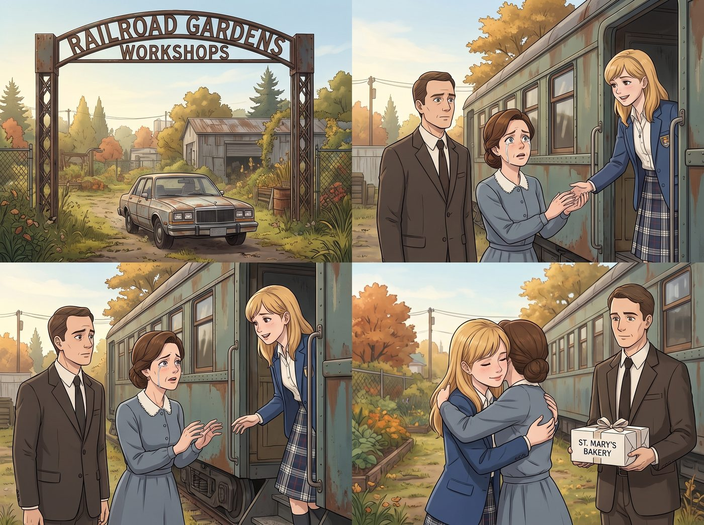

遠道而來的沉默守護

十月中旬的一個週六，一輛塵封已久、車齡已經有些年頭的家庭旅行車，緩緩駛進了波特蘭東區的鐵道花園。
Kate 的父母——Marsh 先生與 Marsh 太太，是第一次踏上這片土地。他們穿著保守而整潔的教會週末便裝，站在車廂外那塊耐候鋼招牌下，帶著一種介於好奇與局促之間的神情，安靜地打量著眼前這座由廢棄火車廂改造而成的工坊。
一、小心翼翼的問候
「Katherine。」Marsh 太太看見女兒從車廂裡走出來，聲音裡帶著明顯的顫抖，快步上前，卻在伸手的瞬間又猶豫了一下，最終只是輕輕握住 Kate 的手，沒有像過去那樣直接擁抱。
「媽，」Kate 笑著主動張開雙臂，給了母親一個溫暖的擁抱，「妳可以抱我的，我沒事的。」
Marsh 太太的眼眶瞬間紅了，她小心翼翼地回抱住女兒，力道輕得像是怕弄碎什麼易碎品。
Marsh 先生站在一旁，手裡提著一個裝滿了他們家鄉教會麵包坊出品的糕點禮盒，清了清嗓子，語氣生硬卻努力維持著溫和：「這裡……看起來真不錯，Katherine。妳一直很喜歡花草，我看妳把這片鐵道旁的花園照顧得很好。」
沒有質問她為什麼不回鎮上找份"正經"工作，沒有追問她跟這幾個朋友之間到底是什麼關係，甚至沒有提起教會、聖經或者任何她曾經害怕聽到的字眼。Kate 心裡清楚，這種小心翼翼、字斟句酌的溫柔，跟她記憶裡那個總是充滿規訓與審視的家，已經完全不是同一種質地了。
二、車廂裡的沉默觀察
Chloe、Max 和 Victoria 刻意保持著一定的距離，讓 Kate 跟父母能有更多獨處的空間，只是遠遠地站在二號車廂門口，各自假裝忙著手邊的事。
Marsh 先生跟著 Kate 走進工坊，目光掃過那面掛滿工具的冷軋鋼牆、正在低頭修剪迷迭香的花架，最後落在牆上那張社區兒童植物療癒課程的合照上，久久沒有移開視線。
「這些孩子……都是妳在教嗎？」他的聲音有些低啞。
「對，」Kate 溫柔地點頭，「每個週六，我會帶社區裡一些經歷過困難的孩子一起種花、聽故事。」
Marsh 先生沉默了很久，才緩緩開口，語氣裡帶著一種近乎懺悔的沉重：「Katherine，我跟妳媽媽……這幾年一直在想，如果那天……如果我們沒有及時知道妳出事，我們是不是連道歉的機會都沒有了。」
他沒有繼續往下說，但 Kate 明白，那場天台上的生死一線，成了這個家庭再也無法迴避、也無法用信仰輕輕帶過的裂痕。
三、被禁言的阿姨
臨走前，Marsh 太太從包裡拿出一個信封，遞給 Kate，臉上帶著一絲複雜的猶豫：「妳阿姨……她本來想親自寫封信給妳的。但妳爸爸和我，看過內容之後，覺得……那不是妳現在需要看到的東西。這是我們重新寫的。」
Kate 接過信封，指尖能感覺到裡面單薄的重量，心裡大致猜到了原本那封信可能寫了什麼。
「我們已經跟她說清楚了，」Marsh 先生的語氣難得地帶上了一絲不容置疑的堅定，「以後家族裡任何人，都不准再對妳的選擇說三道四。這是我們欠妳的。」
Kate 沒有追問阿姨原本寫了什麼，只是輕輕點了點頭，把信封收進口袋：「謝謝你們。」
她知道，這句道歉來得太遲，遲到甚至無法真正撫平那些曾經被言語傷害過的夜晚。但她也清楚，眼前這對小心翼翼、笨拙地學習如何不再評判她的父母，已經是他們所能給出的、最大的努力。
四、遠去的車尾燈
傍晚時分，旅行車緩緩駛離鐵道花園。臨走前，Marsh 太太又一次緊緊抱住了 Kate，這一次力道終於不再那麼小心翼翼。
「我們會為妳禱告，Katherine，」她在 Kate 耳邊輕聲說，「不是為了讓妳回到我們期望的路上，只是希望妳……平安、快樂。」
看著車尾燈消失在鐵道盡頭，Kate 站在原地，久久沒有動。
Chloe 悄悄走到她身邊，把一杯溫熱的花草茶塞進她手裡，沒有多問什麼，只是安靜地陪她站著。
「還好嗎？」過了許久，Max 也走了過來，輕聲問道。
Kate 低頭看著手裡那杯冒著熱氣的茶，嘴角浮起一抹複雜卻真實的笑意：「說不上完全和解……但至少，他們不會再要求我變成他們期望的樣子了。」
「這樣就夠了嗎？」Victoria 難得溫和地問了一句。
「對現在的我來說，」Kate 望向遠方漸暗的天色，聲音很輕，「這樣，已經很好了。」
四人就這樣靜靜地站在原地，任由暮色一點點染上鐵道花園的輪廓。
「咕嚕——」
一聲毫不掩飾的肚子叫，突兀地劃破了這片沉靜。眾人循聲望去，只見 Max 的臉瞬間漲得通紅，整個人恨不得原地找個地縫鑽進去。她下意識地舉起手，手指懸在半空中，一副隨時準備發動時間倒流、把這五秒鐘徹底抹去的架勢。
「別、別看我……」Max 慌亂地把手按回口袋裡，聲音小得幾乎聽不見，「這只是……單純的生理現象……」
Kate 愣了一下，隨即噗嗤一聲笑了出來，剛才眼底那層淡淡的複雜情緒瞬間被沖淡了不少：「Max，妳不用緊張成這樣啦，肚子餓是很正常的事哦。」
Chloe 在一旁笑得直拍大腿：「哈哈哈哈，長官，妳這反應比剛才 Kate 爸媽的道歉還讓人動容！」
Kate 愣了一下，隨即噗嗤一聲笑了出來，剛才眼底那層淡淡的複雜情緒瞬間被沖淡了不少。她低頭看了看手裡還沒來得及放下的那盒教會麵包坊糕點，眉眼彎了起來：「說起來，我爸媽帶來的這盒糕點，我們還沒開封呢。反正也不好帶去正式場合當伴手禮了，不如現在就拆開吃吧？」
「求之不得！」Chloe 眼睛一亮，一個箭步衝上前，動作麻利地拆開了緞帶。
盒子裡整整齊齊碼放著幾種手工烘焙的酥皮點心——肉桂捲、藍莓司康，還有幾塊撒滿糖霜的檸檬磅蛋糕，散發著陣陣溫暖的奶油香氣。
「你媽媽的手藝真不錯。」Victoria 拿起一塊檸檬磅蛋糕，優雅地咬了一小口，難得毫不吝嗇地給出讚美。
Max 也拿了一個肉桂捲，一邊咀嚼一邊笑著感嘆：「這味道，跟妳平常烤的有點像呢。」
「因為我小時候的烘焙手藝，就是跟她學的呀。」Kate 拿起一塊藍莓司康，輕輕咬了一口，熟悉的味道在舌尖化開，那些關於過去的複雜情緒，此刻都被這份帶著家的味道的溫暖，悄悄撫平了幾分。
四個人就這樣坐在車廂門口的台階上，就著暮色分食著這盒遲來的禮物，笑聲混著糕點的香氣，在鐵道花園裡緩緩飄散開來。